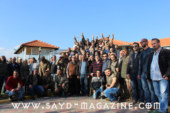

ردا على ضياع الدولة في موضوع الصيد البري - بعد اصدار قرار تشدد في منع الصيد والتراجع عنه بعد عدة ايام من اصداره، في ظل سريان قانون منع الصيد منذ 20 عاما - أقامت مجموعة " اساطير الصيد " لقاء في منطقة غزّة في البقاع الغربي الثلاثاء في 6 كانون الاول 2016 بالتضامن مع مجموعات صيادين من كل جنوب لبنان الى شماله اتت لرفع الصوت والمطالبة بالاسراع بتنظيم الصيد للمحافظة على الطبيعة والهواية من الصيد الجائر الذي يمارسه القواصون دون حسيب او رقيب. وقد رعى هذا التجمع مدير عام مؤسسات الغد الأفضل حسن عبد الرحيم مراد بحضور رئيس مركز الشرق الاوسط للصيد المستدام ،رئيس تحرير مجلة"صيد" ادونيس الخطيب - رئيس بلدية الخيارة محمد مظلوم، رئيس بلدية غزة احمد ساطي - رئيس نادي البقاع للرماية والصيد فوزي نحاس - ورئيس نادي "شتورا كونتري كلوب” جورج عاصي- رئيس قسم الرماية في مجلة "صيد" عضو اللجنة التدريبة في مركز الشرق الاوسط للصيد المستدام سليمان سارة. رئيس مجموعة " تريغر تيم " خالد بو يونس الى جانب مجموعات صيادين اخرى من مناطق شمال لبنان وجنوبه ومناطق الشوف وعاليه. نخلاوي : للاسراع بتنظيم الهواية وفتح ابواب الامتحانات وقد تحدث في اللقاء رئيس مجموعة " اساطير الصيد " رجل الاعمال السيد ظافر نخلاوي ، عن وضع الصياد الذي يعاني من دولة لم تهتم بتنظيم هوايته. ودعا كل المسوؤلين والمعنيين الى الاسراع في تنظيم الهواية وفتح ابواب امتحانات الصيد لكل صياد يرغب بالحصول على رخصة ومن ثم فتح الموسم بطريقة شرعية العام القادم . وذلك للحد من ضرر القواصين . واشار الى ان الصيد ليس موضوعاً طائفياً او مذهبياً ولهذا يجمع كل الناس ومحبي الطبيعة، ثم عدّد النشاطات التي قامت بها مجموعته من تنظيف محمية عميق لعدة مرات، وإقامة لقاءات توعية مع مركز الشرق الاوسط للصيد المستدام . ووضع بيوت خشبية صغيرة للطيور الصغيرة واعشاش على ساريات حديدية عالية لطيور الرهو، الى نشاطات ولقاءات في سبيل المحافظة على البيئة. مراد : البقاع يستفيد من الصيد والصيادون اكبر حزب في لبنان من جهته تناول راعي اللقاء حسن مراد الفائدة الاقتصادية التي تجنيها منطقة البقاع من ممارسة هواية الصيد التي تعتبر سياجة داخلية كبرى . وطالب بإنشاء محميات للصيد، وتشكيل لجنة تمثل جميع الصيادين الذين اعتبرهم اكبر حزب في لبنان، ودعا الى القيام بحملات توعية لتجنب خطر السلاح وتعزيز ثقافة السلامة . ودعا الى اقامة محاضرات توعية في مركز عمر المختار للتلامذة لان الجيل الجديد هو من سيبني مستقبل الوطن. الخطيب : من المعيب ان ننتظر الاعلام ليخبرنا عن قوانين هوايتنا ومن يقول ان ليس هناك من قانون صيد هو جاهل ولا يقرأ. بعد انتهاء اللقاء اعلاميا امام الشاشات تحدث رئيس مركز الشرق الاوسط للصيد المستدام، رئيس تحرير مجلة "صيد " ادونيس الخطيب مع رؤساء مجموعات الصيادين المشارٍكة بصراحة كبيرة لتحديد المسؤوليات ورد على اسئلة الجميع بخصوص موضوع التنظيم وأكد ان من المعيب ان ينتظر صياد الاعلام ليعرف عن هوايته بل عليه البحث عن كل ما يتعلق بها من قوانين ومراسيم تطبيقية .. ولفت الى ان من يقول ليس هناك قانون صيد هو جاهل ولا يقرأ ، ومن يقول نريد قانونا جديدا للصيد هو لا يفهم ماذا يقرأ .. فالقانون حضاري وعصري والذي يمكننا ان نطالب بتغيره فيه هي لائحة الطرائد التي هي في الاساس تتغير كل سنة بناء على معطيات بيئية تتعلق بحالة الطريدة. وأكد اننا عوضا على اطلاق السباب والتهجم ومضيعة الوقت، علينا ان نساعد ونتدخل في وضع لائحة الطرائد( المسموح صيدها وعددها في كل رحلة) بالتعاون مع وزارة البيئة عبر رفدها بالمعلومات التي بحوزة الصيادين المحترفين عن وضع كل طريدة او طير في الحقل .. وسأل هل من احد يريد ان يغير في القانون كيفية حمل البندقية بطريقة امنة او اخلاقيات الصياد او سعر الرخصة او ان يشرع الصيد بالشباك مثلا .. ودعا الى تنظيم مجموعات الصيد المستدام ويكون لكل مجموعة مشروعها الحقيقي واهدافها لا ان تكون مجموعات " قلقلة حكي وعرض بطولات " على صفحات التواصل الاجتماعي مؤكدا انه يمكن ان نستحدم هذه الصفحات لخلق توعية حقيقية والاضاءة على المخالفات بالصورة وطلب المحاسبة من البلدية والدولة لان اهل الصبي هو الصياد الحقيقي اما القواص فهو المتعدي على الصيد واخلاق الصيد و "الفجعان " دائما. وختم ان اهم الحلول لازمة الصيد هي انشاء مناطق صيد مسؤول ضمن نطاق البلديات يمكن مراقبتها من قبل شرطة البلدية وحراس الاحراش وهي التي ستشكل بوابة تنمية اقتصادية للمنطقة ويستفيد منها الجميع دون استثناء.
من كل وادي خبر


{kind=link}